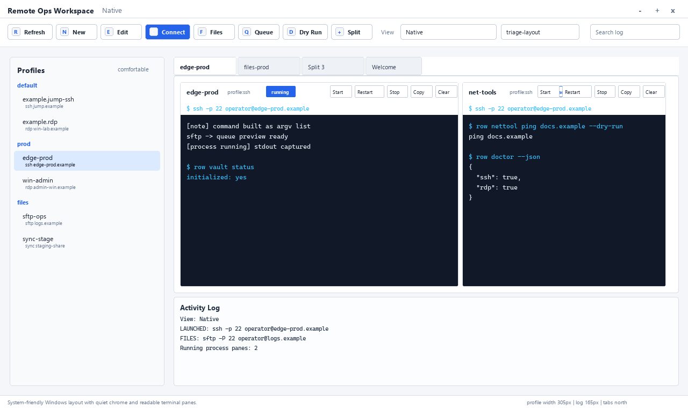
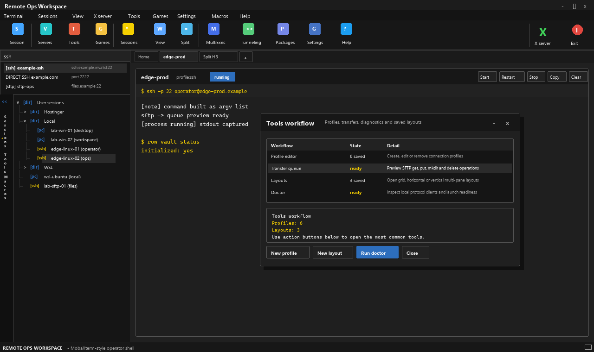
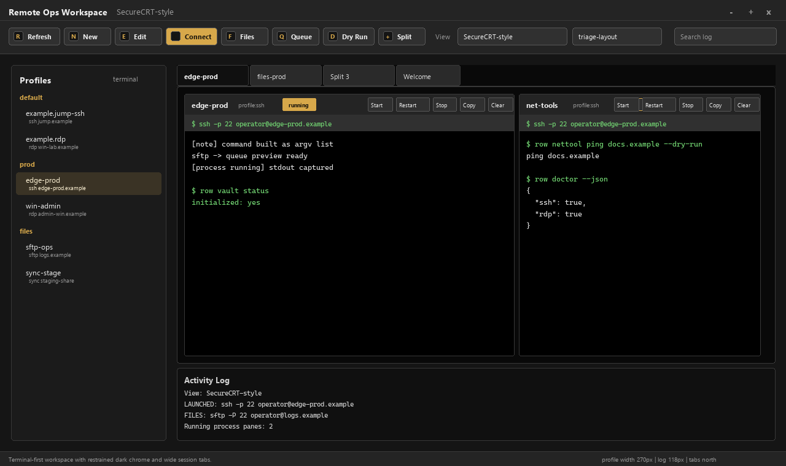
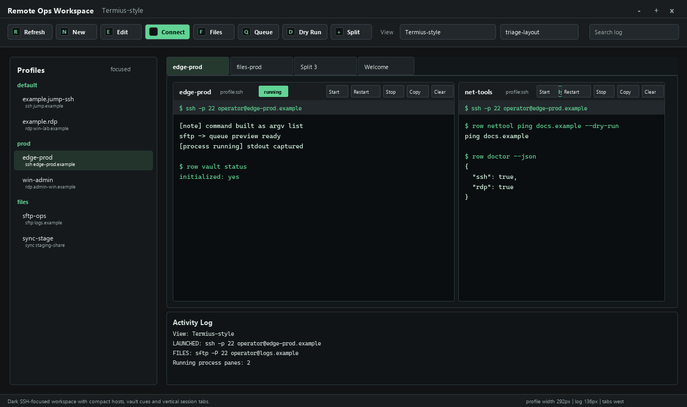
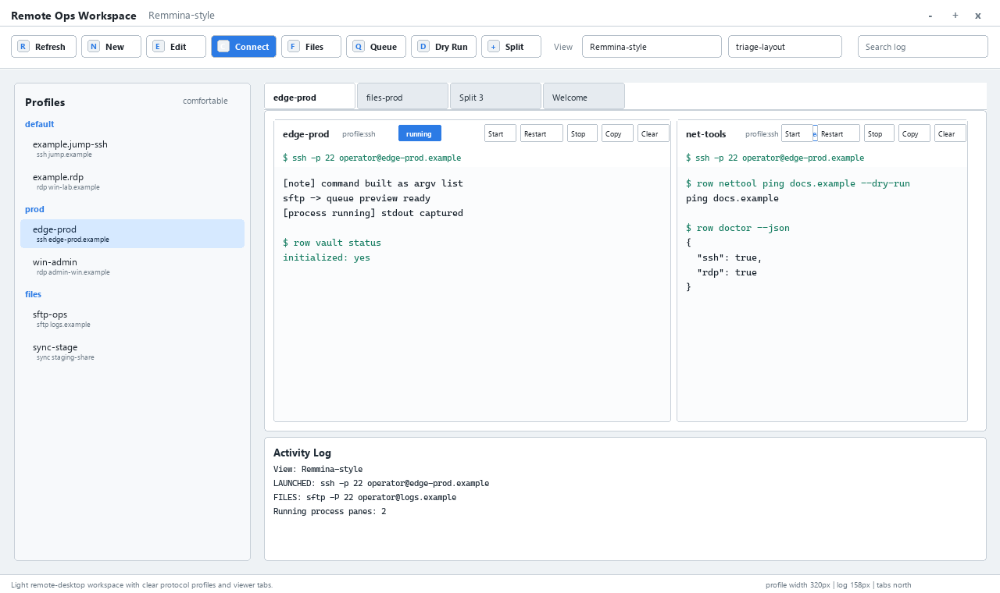
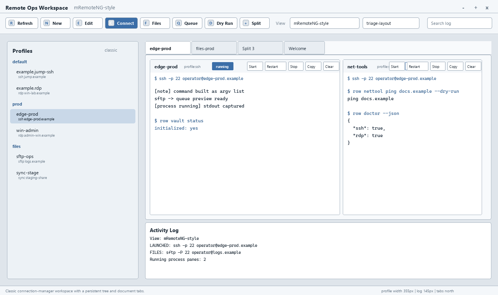

Native
System-friendly Windows layout with quiet chrome and readable terminal panes.
- Density
- comfortable
- Profile Width
- 305 px
- Log Height
- 165 px
- Tabs
- north
Static Windows-friendly previews generated from the same GUI design preset metadata used by the PyQt6 desktop shell.





